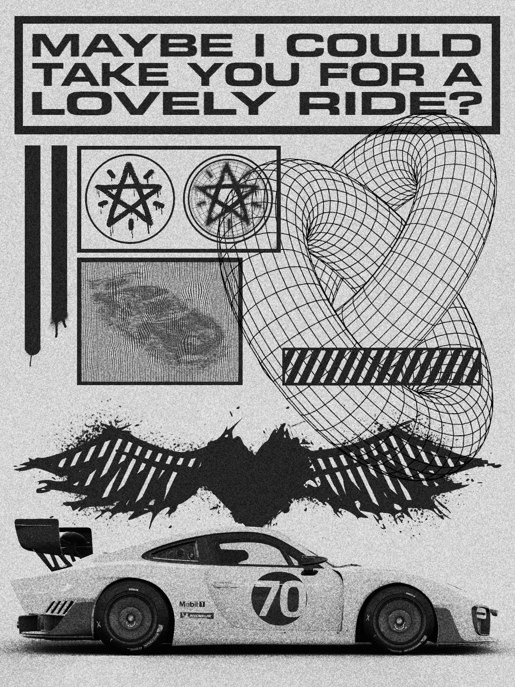

Brutalism
This is probably the most unnecessary edit I have done.
This is my activity for Personal Development, or PerDev. It is a mini-poster about showing affection or love.
This took me almost 3 hours. It shouldn't be that long for a mini-poster.
The style I used for this is Brutalism with a touch of Graffiti. Brutalism might be the most iconic art styles out there.
I used an old screenshot from the game "Forza Horizon 5" which is one of my favorite games, and slapped some stupid crap on it and made it look like this.
There isn't really any good explanation on why I did this. Either I was bored or I wanted to edit more of these kinda stuff.
If you want to see more cars without the Brutalism style, check out @nectarluve for more cars or stuff
#plug
#plug
#plug
#plug
#plug
#plug
#plug
#plug